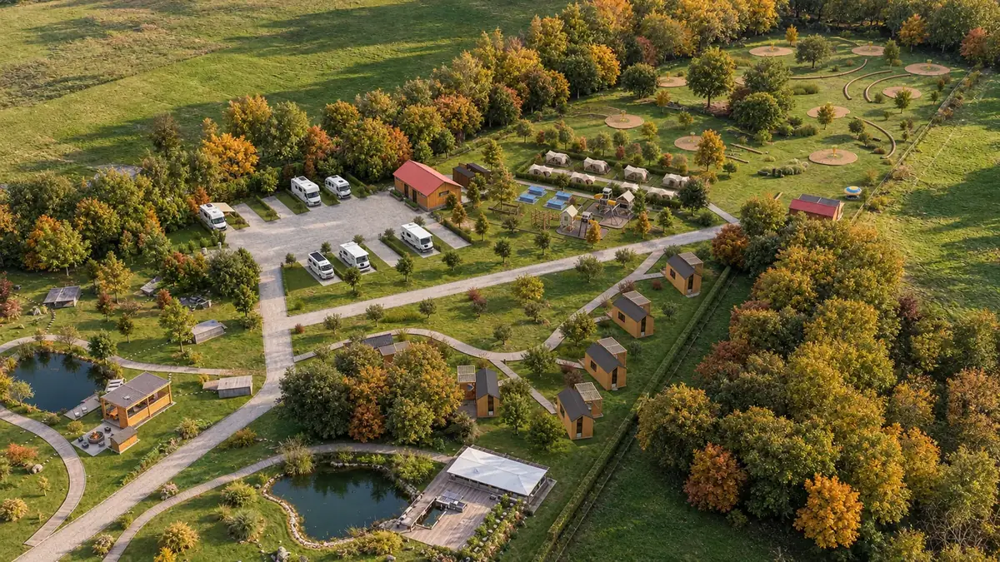
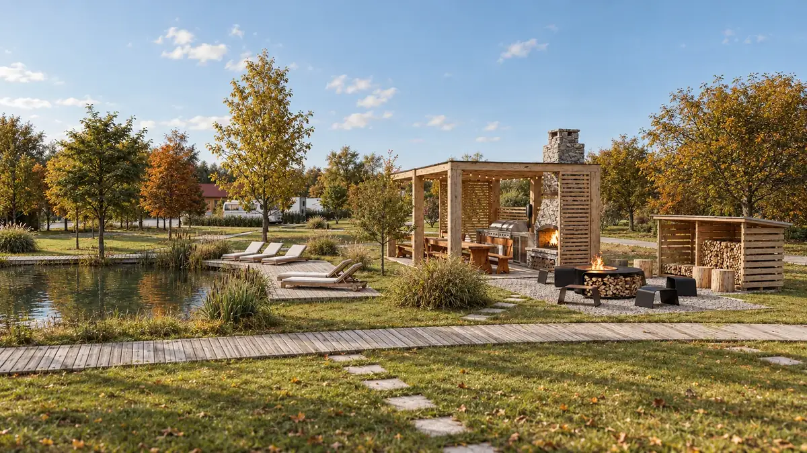

SELECTED PROJECT
A complete visual development concept combining glamping accommodation, camper pitches, recreation, landscaped paths, a natural swimming pond and outdoor social spaces. The project is presented from masterplan scale down to the guest experience.

The visualization package connects spatial planning with photoreal presentation. Aerial views explain the overall organization, while eye-level imagery communicates landscape character, materiality and the atmosphere of the future destination.
